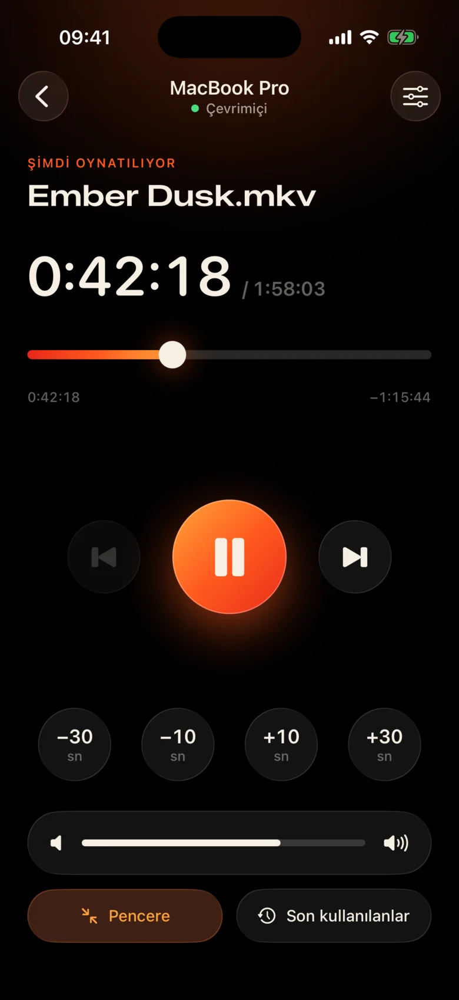
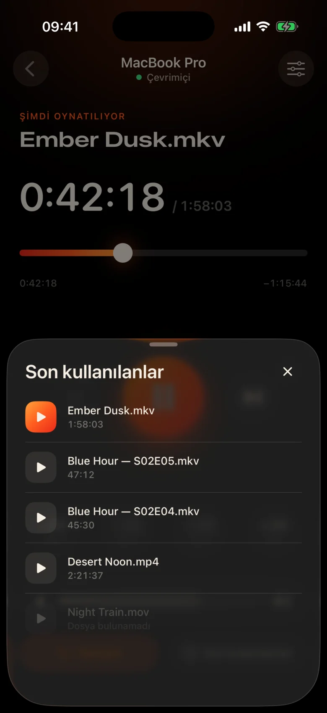
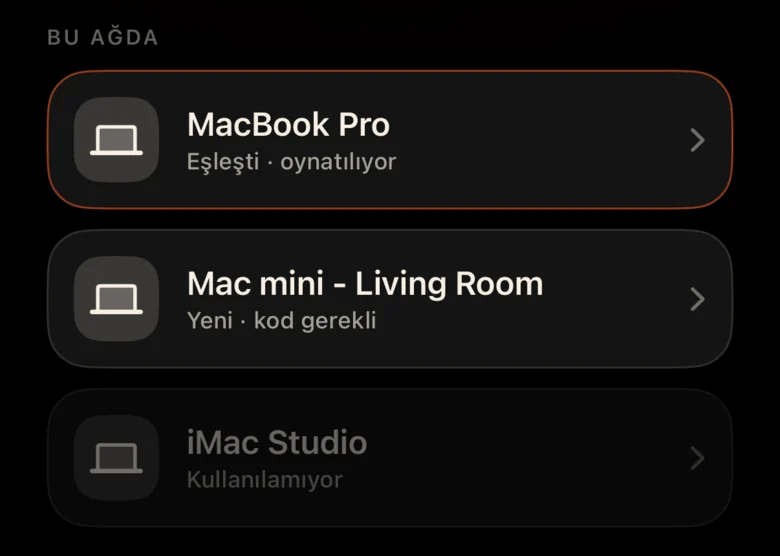
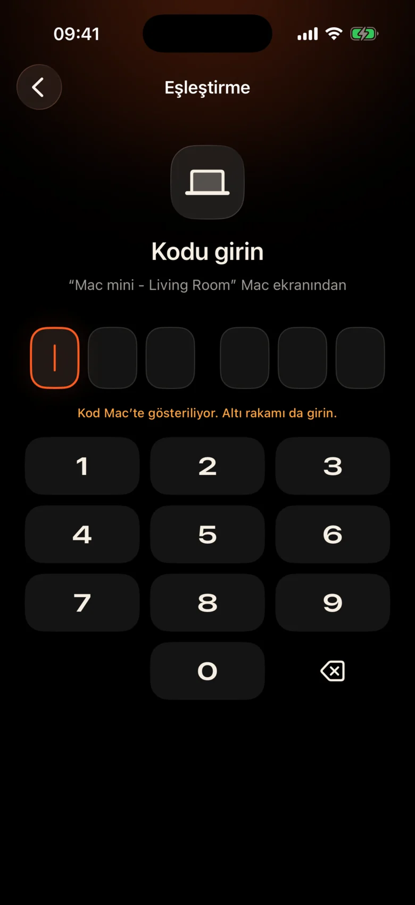

Mac odanın karşısındadır
Projektöre duvardan takılı. Her duraklama, kalkmak, karanlıkta trackpad'i bulmak ve gözlerinizi kısarak küçük kontrol çubuğuna bakmak anlamına gelir.
Kinrox: Elinizdeki telefonda duraklat'a dokunun.
Kinrox, Mac cihazınızdaki herhangi bir videoyu oynatır ve iPhone cihazınızı uzaktan kumandaya dönüştürür. MacBook projektörde, siz kanepede: duraklatın, 10 saniye geriye gidin, sesi kısın veya battaniyeden ayrılmadan bir sonraki bölüme başlayın.


Projektöre duvardan takılı. Her duraklama, kalkmak, karanlıkta trackpad'i bulmak ve gözlerinizi kısarak küçük kontrol çubuğuna bakmak anlamına gelir.
Kinrox: Elinizdeki telefonda duraklat'a dokunun.
Bir sahnede fısıltılar, bir sonraki sahnede patlamalar var ve yan odada biri zaten uyuyor.
Kinrox: baş parmağınızın hemen altında bir ses kaydırıcısı.
IP adresleri ve şifreleri olan web panelleri, uykuya dalan bir tarayıcı sekmesi, kanepe için değil masa için yapılmış düğmeler.
Kinrox: Mac'nizi tek başına bulur, bir kodla eşleşir.

Büyük hedefler, karanlık, sıcak bir tema ve her basışta hafif bir dokunsal dokunuş. Filmden gözlerinizi ayırmadan kullanabilirsiniz.
Tüm düğmeler, uykuluyken bile rahatça basabileceğiniz kadar büyüktür.
Bir satırı mı kaçırdınız? Bir kez geri dokunun. İki ile girişi atlayın.
Kinrox'nin kendi ses düzeyi 0'dan 100'e kadar. Mac'nin sistem ses düzeyi değişmeden kalır.
Aynı klasördeki önceki ve sonraki dosya, Finder sırasına göre.
Daha önce izlediğiniz bir şeyi seçin; Mac'de açılıyor.
Zaman çizelgesini istediğiniz ana sürükleyin, kanepeden tam ekrana geçin.
IP adresi yok, şifre yok, hesap yok. İlk koddan sonra iPhone cihazınız kendi kendine yeniden bağlanır.
Bir dosyayı Kinrox'ye sürükleyin veya ⌘ O tuşuna basın. Uzak sunucu varsayılan olarak açıktır.
Kinrox, her iki cihaz da aynı Wi‑Fi'ye bağlı olduğunda kendi kendine görünüyor.

Mac, iki dakika boyunca geçerli olan bir kodu gösterir. Üç yanlış deneme ve gitti.


Alex’s iPhone, Kinrox’u kontrol etmek istiyor. Bu kodu telefonunuza girin.
 Kod 1:47 sonra sona erecek
Kod 1:47 sonra sona erecek
Video arayüzdür. İhtiyacınız olduğunda ince bir cam tabakası beliriyor ve üç saniye sonra gizleniyor.

mpv ve IINA'nin arkasındaki motor olan libmpv üzerine inşa edilmiştir. Gömülü veya harici ses ve altyazıları seçin. VideoToolbox donanım kod çözme işlemini gerçekleştirir.
Kinrox, klasördeki videoları sıralar ve bölüm bittiğinde bir sonrakini başlatır - Finder gibi "10"dan önce "2".
Klavye ⏯ tuşları, Kontrol Merkezi ve Şu An Çalınan kontrolü Kinrox. Başlangıç ekranında en fazla 20 yeni dosya bekler.
Mac ve iPhone'niz oynatma komutlarını doğrudan yerel ağınız üzerinden değiştirir. Videolarınız Mac'de kalır.
Bonjour üzerinden keşif, yalnızca kendi alt ağınızdan bağlantılar. Genel adresler ve cep telefonu reddediliyor.
Her komut şifreli bir kanalda hareket eder. Eşleştirme jetonları her iki cihazdaki Anahtarlık'ta bulunur.
X25519HKDF-SHA256ChaCha20-Poly1305Hesap veya kullanım analizi yok. Mac, benzersiz tanımlayıcılar veya sistem profili oluşturma olmadan, genel güncelleme akışını günlük olarak kontrol eder. Bu web sitesinde analiz veya çerez bulunmamaktadır.
Uzaktan kumanda başlıkları ve süreleri görür, dosya yollarını asla görmez. Yeni bir dosyanın açılması Mac'de çözüldü.
Kinrox, Swift 6'da ve SwiftUI, libmpv'nin üstünde yazılmıştır. Oynatıcının, uzaktan kumandanın ve protokolün her satırı GitHub üzerindedir.
Kaynaktan derle# Xcode 26.5, XcodeGen and mpv from Homebrew
brew install xcodegen mpv pkg-config
git clone https://github.com/awaik/Kinrox.git
cd Kinrox
cp -n Config/Signing.local.xcconfig.example \
Config/Signing.local.xcconfig
# Set your team: docs/runbooks/RUNBOOK-BUILD-AND-SIGNING.md
./Scripts/check-env.sh
./Scripts/generate.sh
xcodebuild -workspace Kinrox.xcworkspace \
-scheme PlayerMac -configuration Debug \
-destination 'platform=macOS,arch=arm64' \
-derivedDataPath DerivedData build
open DerivedData/Build/Products/Debug/Kinrox.appMac ve iPhone bir Wi‑Fi ağını paylaştığında oynatma ve uzaktan kumanda internet erişimi olmadan çalışır. Mac, günlük güncelleme kontrolleri için HTTPS'yi kullanır ve yüklemeyi seçtiğinizde bir güncellemeyi indirir.
Evet. Kinrox, Mac'nizin gösterdiği her şeyde oynatılır; bir projektör, HDMI üzerinden bir TV veya AirPlay'ye bağlı bir ekran.
macOS 14 Sonoma veya üzeri üzerinde Apple silicon ile Macs ve iOS 17 veya üzeri üzerinde iPhones. Intel Macs henüz desteklenmiyor.
Evet. Her iPhone kendi koduyla bir kez eşleşir; Aynı anda en fazla dört uzaktan kumanda bağlanabilir. Bunlardan herhangi birini oynatıcı ayarlarından iptal edebilirsiniz.
Evet. Mac'de Ses ve Altyazı düğmesini veya Ses ve Altyazı menülerini kullanın. Gömülü parçaları seçin, iç içe geçmiş klasörlerdeki harici dosyaları bulun veya altyazıları kapatın. Kinrox bir sonraki bölüm için seçiminizi hatırlayabilir.
Hiçbir şey. Kinrox, GNU GPL v3 kapsamında ücretsiz ve açık kaynaktır.
Mac ve iPhone için Kinrox. Ücretsiz, açık kaynak ve film geceleri için tasarlandı.